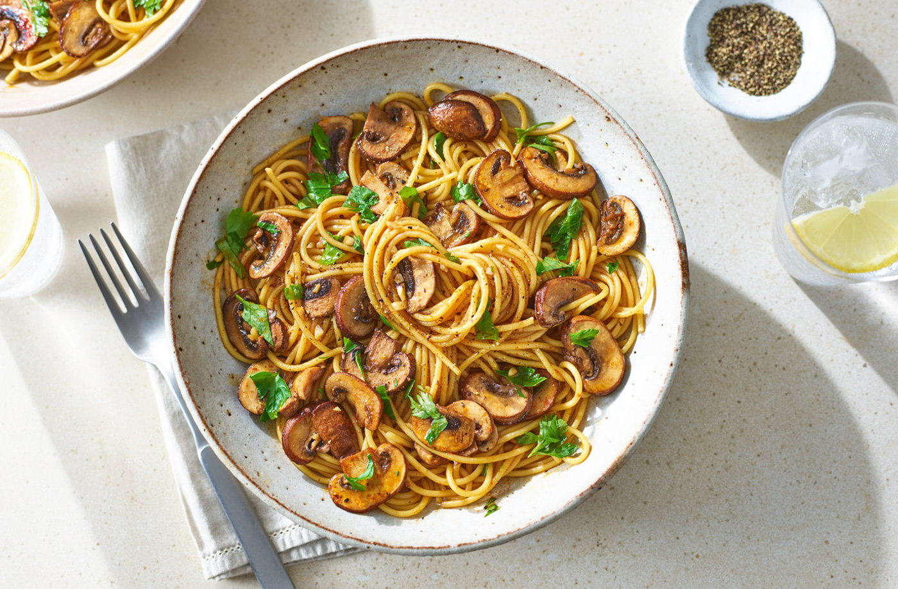

Soy Butter Mushroom pasta

Description
Whip up a delicious pasta dish using ingredients from your storecupboard.
Stir your spaghetti and mushrooms into a silky sauce made from soy sauce, butter and garlic
Ingredients
- 200g spaghetti
- 1 tbsp olive oil
- 250g chestnut mushrooms, finely sliced
- 1 tsp paprika
- 40g unsalted butter
- 3 garlic cloves, finely chopped
- 3 tbsp reduced-salt soy sauce
- handful parsley, roughly chopped
- Parmesan, finely grated, to serve (optional)
Steps
- Bring a pan of salted water to the boil and cook the spaghetti for 10-12 mins until tender.
- Heat the olive oil in a frying pan over a medium-high heat and add the mushrooms. Fry for about 5-7 mins until golden brown, then season with black pepper and add the paprika.
- Turn the heat down to a medium-low heat, add the butter and garlic and stir continuously so the garlic doesn’t burn.
- Add the soy sauce and 2-3 tbsp of pasta water to create a silky sauce, then stir in the cooked pasta. Toss to combine and sprinkle over the parsley and Parmesan, if using, to serve.